来源：https://awipdqiy88i.feishu.cn/docx/HUkGddb9po9pQrxJsBmc9Mf4nEP
本次分享分为两部分，第一部分是我们在实操之前做的市场调研，第二部分是我们实操一个月后的复盘。
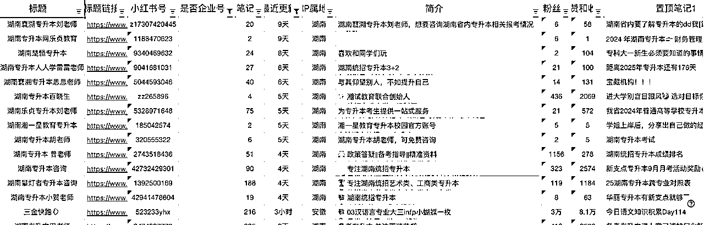
（图例1-详情可以点击链接查看 ）
信息采集概述：通过湖南区域账号采集样本（共计采集约 280+同行账号），目前专升本赛道湖南区与账号类型大体分为两种类型：
1、企业蓝 V 账号矩阵
2、企业蓝 V 账号+教师 or 素人引流账号矩阵
（⚠️注意：报告中信息及分析维度仅来源于小红书平台内相关数据，不涉及客户行业本身商业分析内容）
经过十天的账号笔记制作行业信息了解，补充如下信息：
1、湖南专升本机构与河南、山东等行业大省在新媒体上的投入度不同，采集爆款笔记过程中发现，专注线上营销能达到全国平均线的机构目前只有新支点
2、跨平台采集内容过程中发现在抖音平台通过视频和直播进行引流的机构不在少数，通过账号内容的数据和直播间互动量预测转化率和小红书相差不大，流量到微信开口的比例大概是 5%-10%之间
竞品机构信息采集注释：
1、根据公司主题采集蓝 V 认证账号
2、涉及多个资质的蓝 V 账号矩阵，仅采集粉丝量最高的账号
3、全国连锁类机构、综合考试培训机构不在重点采集和分析范围内
| 序号 | 账号名称 | 开始运营时间（主账号首篇笔记） | 粉丝数 | 主页链接 |
|---|---|---|---|---|
| 1 | 湖南华图专升本咨询 | 2024.7.4 | 150 | https://www.xiaohongshu.com/user/profile/6684b330000000000b03249c?xhsshare=CopyLink&appuid=5e12f9680000000001005a1e&apptime=1731562072&share_id=df0c4b6d65f04582926b975dfed91a8e |
| 2 | 湖南库课专升本咨询 | 2023.5.13 | 1354 | https://www.xiaohongshu.com/user/profile/64481fea0000000029012355?xhsshare=CopyLink&appuid=5e12f9680000000001005a1e&apptime=1731562180&share_id=c9d5215792ee4d6aa1f06989f497d883 |
| 3 | 湖南领途专升本咨询 | 2023.5.24 | 3194 | https://www.xiaohongshu.com/user/profile/600b7182000000000100a4bf?xhsshare=CopyLink&appuid=5e12f9680000000001005a1e&apptime=1731562261&share_id=8d778536fa2f49c3b96523b48dd36438 |
| 4 | 湖南乐贞专升本咨询 | 2021.9 | 8081 | https://www.xiaohongshu.com/user/profile/6167e1e300000000020271db?xhsshare=CopyLink&appuid=5e12f9680000000001005a1e&apptime=1731562438&share_id=38be087a8fd14d6c9dca2fe51157c82b |
| 5 | 湖南中公专升本考试咨询 | 2021.9.17 | 1231 | https://www.xiaohongshu.com/user/profile/6110bfc70000000001005f5d?xhsshare=CopyLink&appuid=5e12f9680000000001005a1e&apptime=1731562804&share_id=c784601e61b34f179b57e0c4782cacc6 |
| 6 | 湖南人人学专升本教育 | 2023.1.4 | 2889 | https://www.xiaohongshu.com/user/profile/5ee39de10000000001004e6d?xhsshare=CopyLink&appuid=5e12f9680000000001005a1e&apptime=1731562883&share_id=332a668b461f40c98bcaaaf24e8efcfa |
| 7 | JY 新支点专升本研究所 | 2023.9.8 | 2007 | https://www.xiaohongshu.com/user/profile/649d2071000000000b0170f7?xhsshare=CopyLink&appuid=5e12f9680000000001005a1e&apptime=1731563447&share_id=7c1325cd18b34a9da50753b0359ce81b |
| 8 | 湖南学理专升本咨询 | 2024.4.23 | 46 | https://www.xiaohongshu.com/user/profile/65d554cd000000000503159f?xhsshare=CopyLink&appuid=5e12f9680000000001005a1e&apptime=1731563378&share_id=8194592b4900492a9e69f10f03d3872e |
| 9 | 湖南湘试专升本咨询 | 2022.8.18 | 1047 | https://www.xiaohongshu.com/user/profile/62f5f889000000001f005064?xhsshare=CopyLink&appuid=5e12f9680000000001005a1e&apptime=1731563552&share_id=4d9ce5a3e4fc475a886e8e6d5a358a42 |
| 10 | 湖南宏图兴学专升本咨询 | 2022.5 | 500 | https://www.xiaohongshu.com/user/profile/5f9a7f38000000000101ce23?xhsshare=CopyLink&appuid=5e12f9680000000001005a1e&apptime=1731563662&share_id=cfa67b68f8a84bf7b64a0d5ca7b74a94 |
| 11 | MX梦象专升本咨询 | 2021.5 | 1577 | https://www.xiaohongshu.com/user/profile/5fbd0bde0000000001005b6f?xhsshare=CopyLink&appuid=5e12f9680000000001005a1e&apptime=1731563713&share_id=d7998a151ce5421e9d149578c41870ed |
| 12 | 升德尚专升本咨询 | 2022.6.25 | 4258 | https://www.xiaohongshu.com/user/profile/62b1d5d10000000015014b6b?xhsshare=CopyLink&appuid=5e12f9680000000001005a1e&apptime=1731571326&share_id=67d2cb01d45a44b3bc00d1c1fb0ebcb5 |
| 13 | 湖南考翼专升本咨询 | 2021.10.31 | 1630 | https://www.xiaohongshu.com/user/profile/5e319af3000000000100aad6?xhsshare=CopyLink&appuid=5e12f9680000000001005a1e&apptime=1731571937&share_id=24ef74d63fc5477f85d2d5fda70fd6bf |
概述：根据小红书平台可观察信息维度，优先排除新东方等全国头部综合型平台后，根据限定湖南地区情况分析：
类型一：全国综合类培训机构（覆盖国内主要省市）
类型二：湖南（长沙为主）的地域性综合培训机构
类型三：湖南（长沙为主）的地域性专升本垂直机构 *直接竞品
小红书针对线索获客的业务客户限制增多， 10 月 15 日新规，基本切断了自然流超过一半的获客流量，矩阵账号效果大打折扣，只发笔记，通过优质的笔记吸引目标人群。经过 10 天运营期初步结论：如果要靠自然流获客，做个人号更有优势
专升本蓝 v 账号，长沙本地的机构基本都在做付费投放，笔记里挂咨询窗口，会引导用户填写联系方式。
根据之前咨询小红书官方人员的数据，专升本行业的微信开口成本在 150-220 之间浮动，根据之前的投放数据来看，湖南本地的开口成本大概可以优化在 160-180 之间，投产比在 1:1.2 以上，就可以实现持续的投流推广了。
目前结论 ：由于行业限制，付费流量黄金期只有备考前 1-3 个月，实际成本要看我们自己出价的情况持续优化。
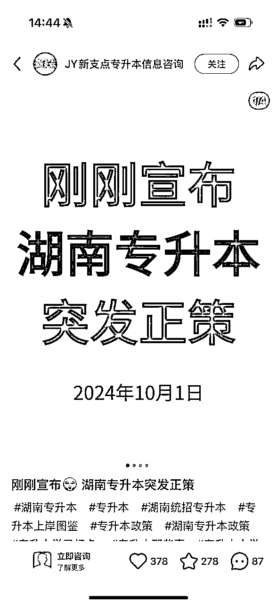
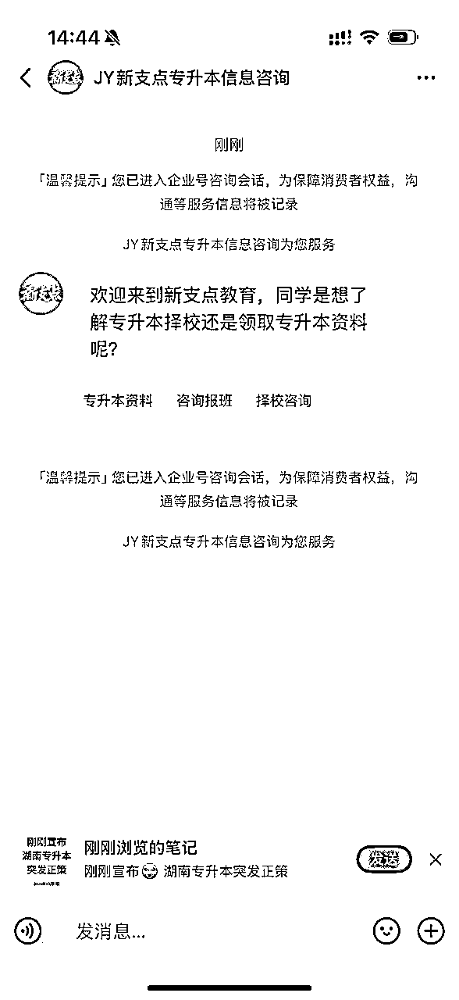
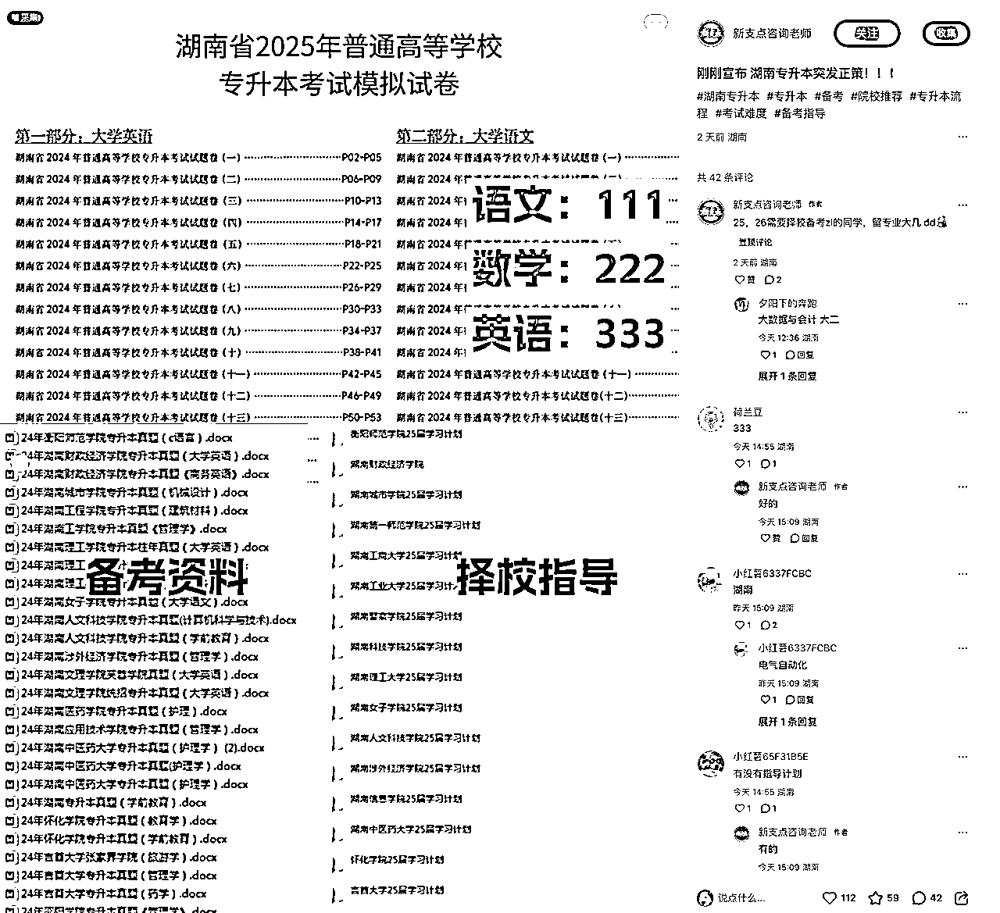
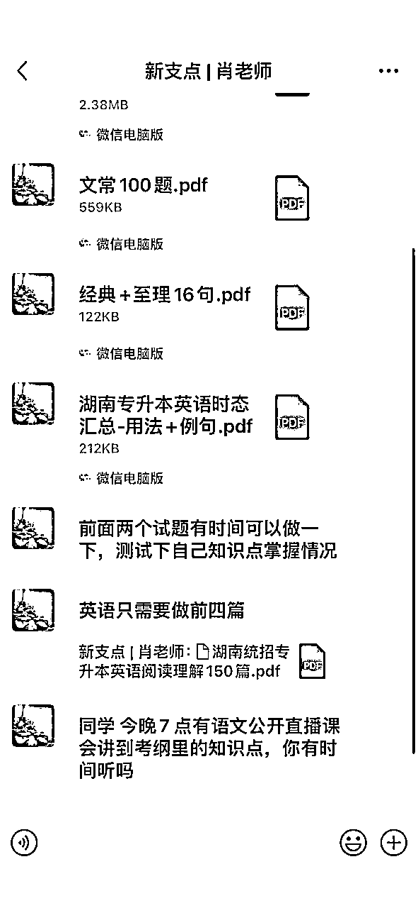
自 11.8-11.13 6 天实践中，我们按照上午（10-12 点），下午（16-19 点），时间段模拟自然关键词搜索
「湖南专升本机构」、「湖南专升本」、「长沙专升本」等垂直关键词下，高频出现的机构账号有：升德尚、新支点、励学三家蓝 V 账号，但素人引流类账号：学姐学长号、机构老师号、评测号，依然占据大量搜索结果。
相同关键词在抖音搜索结果中，基本优先展示新支点相关内容，同时发现新支点在抖音直播的数据相对较好。其次为乐贞。
23 年有在小红书做，24 年已放弃。所以考翼在小红书的打法没有太大参考价值。
24 年在小红书主推考研自习室、考研寄宿
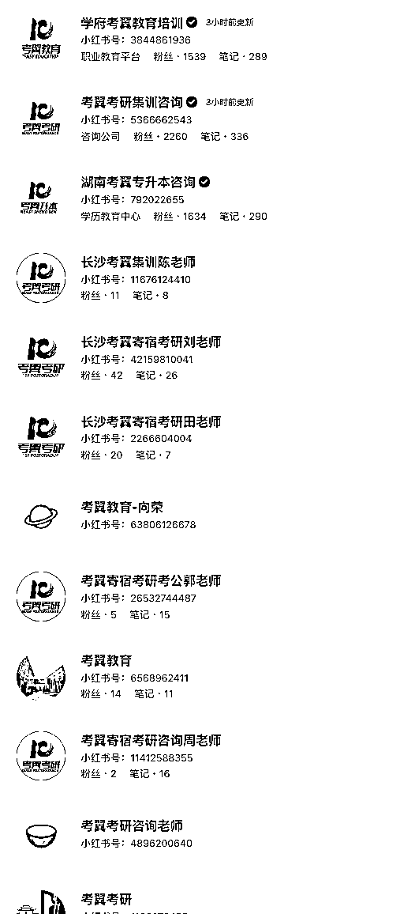
一共 4 个账号，在小红书做得很一般，没有特别突出的账号或笔记
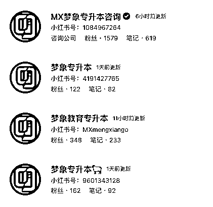
专升本行业个人号主要有以下几种类型：
类型一：上岸前辈类型，人设设定我已经通过专升本考试的学长学姐，内容主要以分享上岸经验、学习方案、资料分享为主，账号基本「废号法」运营，通过自然流或许客资
类型二：机构老师类型，分享内容与类型一基本相同，但是增加老师人设身份，内容上会增加政策解读、择校指导干活，院校材料分享等。
类型三：评测类：基本是新媒体工作室或者受雇于机构的个人完成的，主要做机构评测内容。
类型四：打造个人 IP，这个类型在专升本赛道不多，梦象和部分老师个人、学长前辈有出镜做视频人设的 IP 账号，数据流量情况暂时不清楚，内容主要以老师或者机构 ceo 发的身份，展现行业的专业度、业务能力、亲和力、共情力等，从而获取学生的信任，促成咨询和付费。
概述：目前专升本行业，小红书平台个人号引流获客主要还是以图文笔记为主，部分机构账号旗下或者合作的个人IP 账号有视频内容，甚至以视频内容为主，主要角色身份为类型一和类型二。
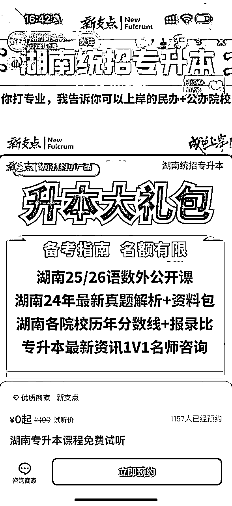
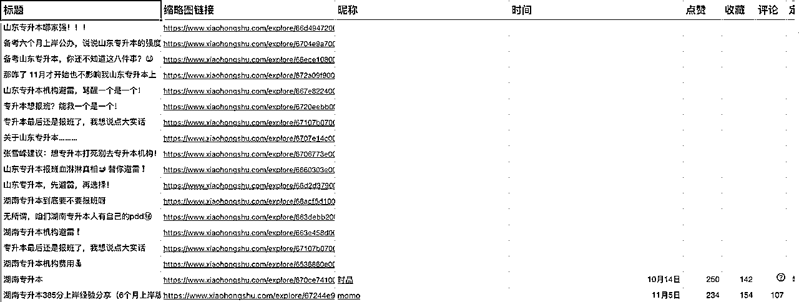
（图例 2-详情点击链接查看 ）
概述：针对目前 10 天运营情况以及行业情况了解，主要目标客户——专科学生
在小红书主要搜索目的如下：
1、获取学习方式/方法
2、资料/信息获取
3、机构情况了解/报名
4、复习搭子（社交内核）
调研报告不涉及专升本行业的综合情况，所有信息来源及分析标准以新媒体平台（小红书为主、抖音为辅）内的数据表现和竞品账号运营情况为主
目前这三类笔记的效果是最好的：
直接分析科目知识点，一点要显得很多，并且排版好看，重点高亮，不能只有黑白两色。
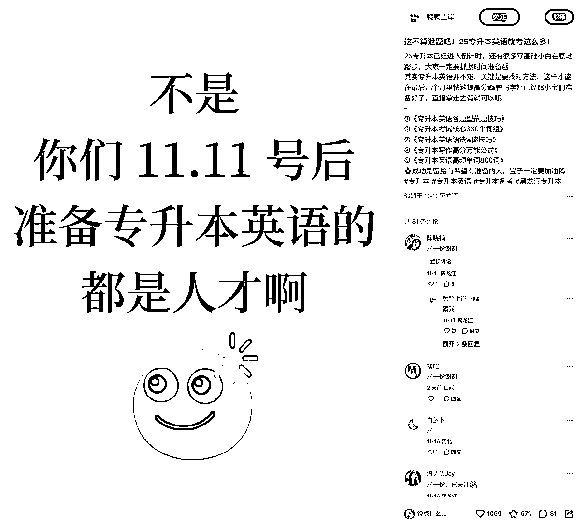
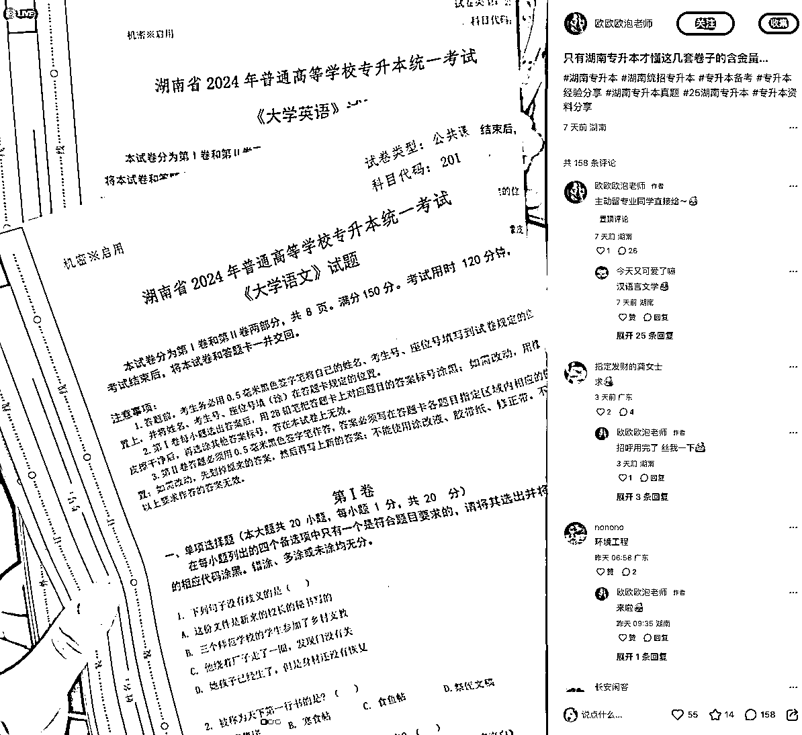
学长学姐的上岸经验，一定要带上各科目怎么学，用了哪些资料，最后插入一张资料合集图引流。
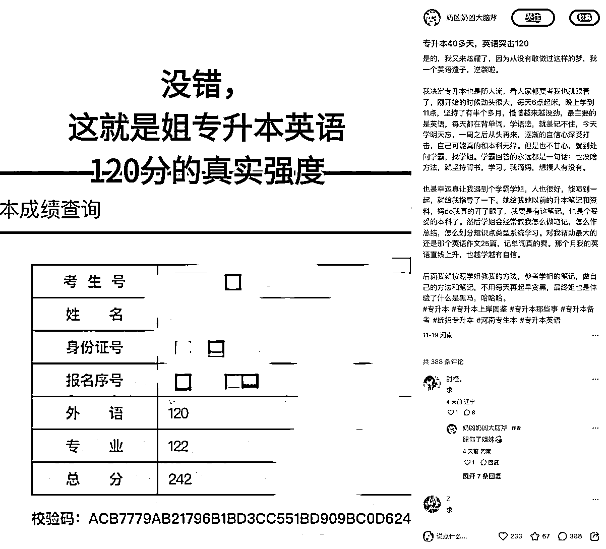
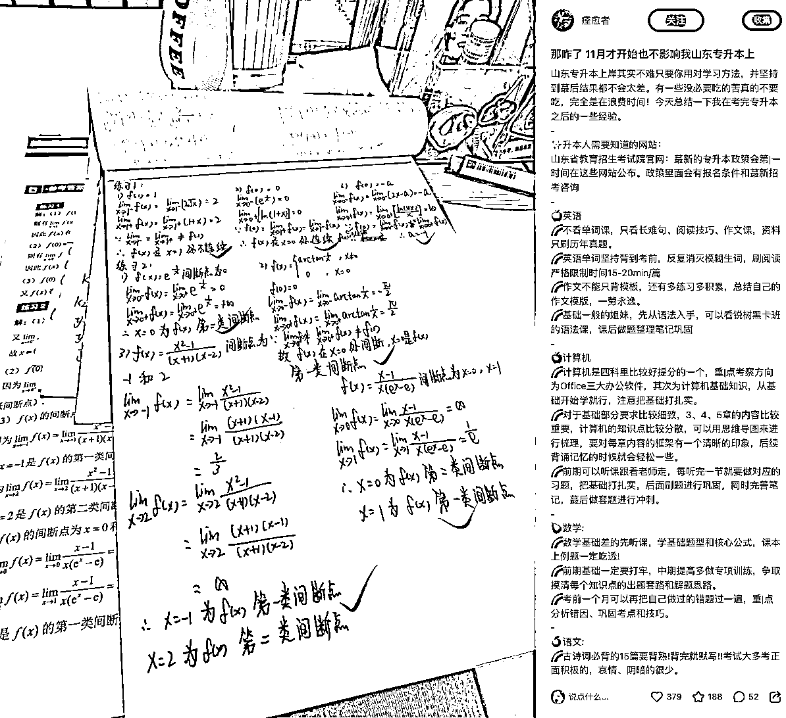
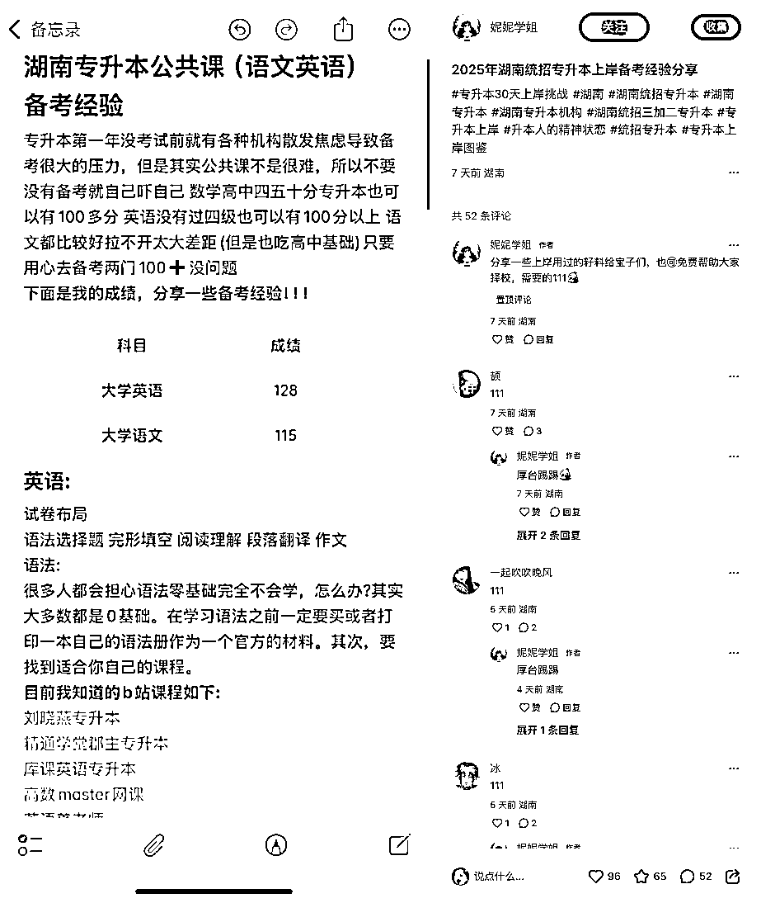
“政策变天”、“突发政策”标题党，把所有备考之前需要了解的专升本知识整理成一篇笔记，最后插入一张资料合集图引流。
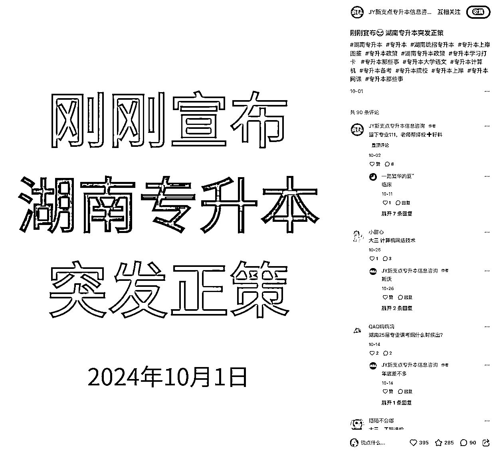

按照目前数据看9-14点是整体的跑量以及流量的黄金时间
同时成本相对也很低均在50左右
17-18点及19-20点这个点的成本相对较高，可以在观察几天如果还是比较高的情况，后续就可以暂停
1、投放时间17：00-18：00 19：00-20：00 的时间段暂停
2、目前是两篇笔记在同一个计划下跑，可能存在软广笔记抢量、硬广笔记跑不出效果的情况。在原先的计划定向下复制一下计划，两条计划同时跑，各跑一篇笔记同时测试下。
3、后续预算可以增加一些，加大量级。目前日预算是 500，日预算可以增加到 800-1000。
4、私信回复速度方面可以适当缩短一点，可以增加一定的加V率。
5、可以新增两篇投放笔记，之前关于价格那篇投放效果不佳，可以继续测试。